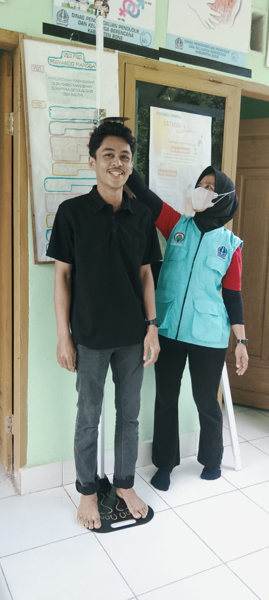
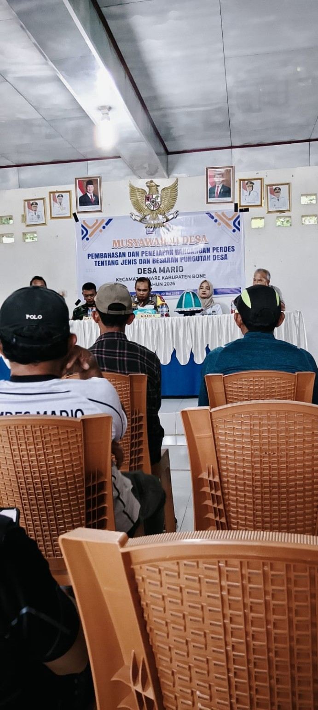
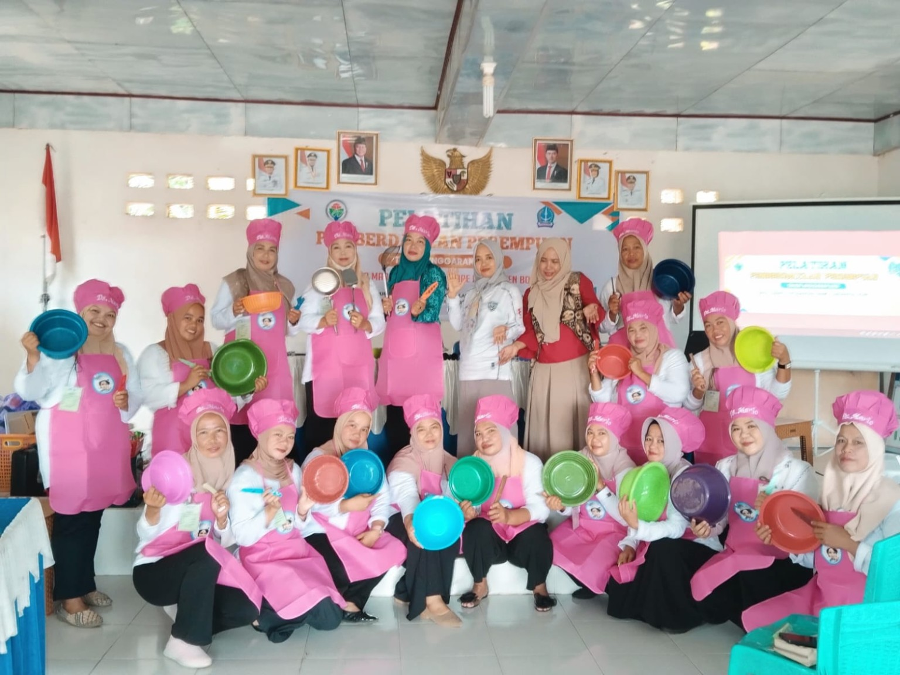
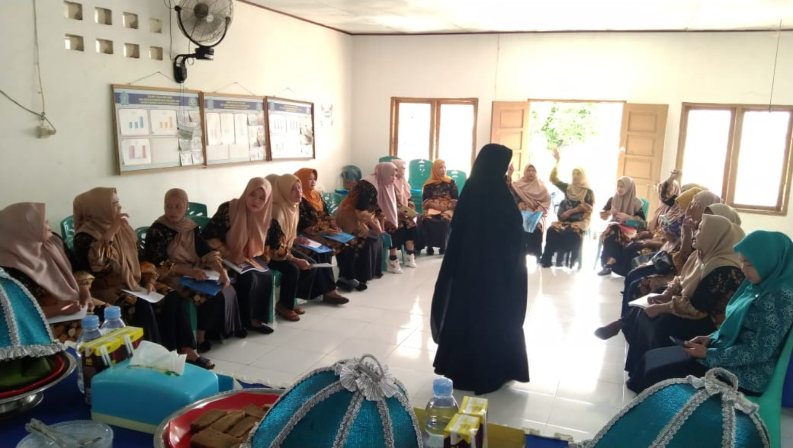
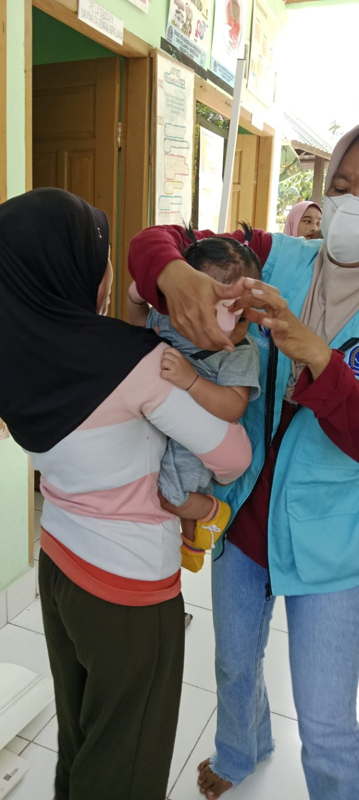
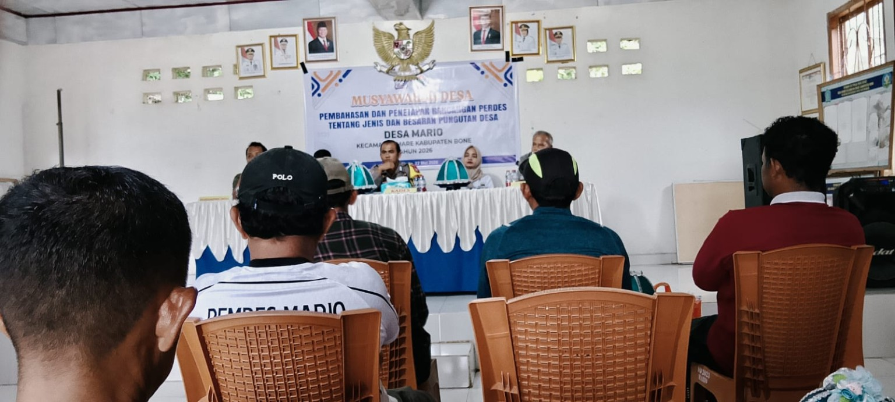
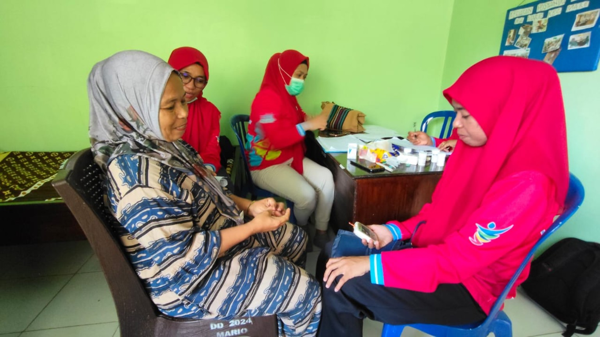

📄
Administrasi Desa
Informasi surat dan kebutuhan administrasi masyarakat desa.
Portal informasi desa untuk mengenalkan kegiatan masyarakat, pelayanan, pembangunan, dan potensi Desa Mario secara modern, sederhana, dan mudah diakses.

Desa Mario berada di Kecamatan Mare, Kabupaten Bone, Provinsi Sulawesi Selatan. Website ini menjadi media informasi dan dokumentasi kegiatan masyarakat desa.
Data resmi seperti nama kepala desa, jumlah penduduk, luas wilayah, batas wilayah, visi-misi, dan perangkat desa dapat ditambahkan kemudian.
Menu layanan awal yang nantinya bisa dikembangkan menjadi sistem online.
Informasi surat dan kebutuhan administrasi masyarakat desa.
Informasi kegiatan Posyandu dan pelayanan kesehatan ibu serta anak.
Informasi kegiatan musyawarah dan partisipasi masyarakat.

Dokumentasi kegiatan musyawarah dan partisipasi masyarakat.

Kegiatan pelayanan dan pemantauan kesehatan masyarakat.

Dokumentasi kegiatan masyarakat dan pengembangan keterampilan.
Foto-foto yang kamu kirimkan sudah dimasukkan langsung ke file ini.





Ganti bagian ini dengan data resmi dari kantor Desa Mario.
Google Maps bisa ditambahkan di sini setelah ada koordinat atau link lokasi kantor desa.
Kembali ke Beranda